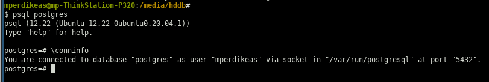
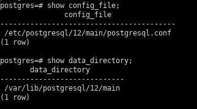
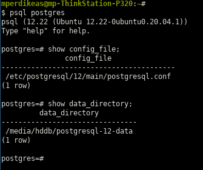
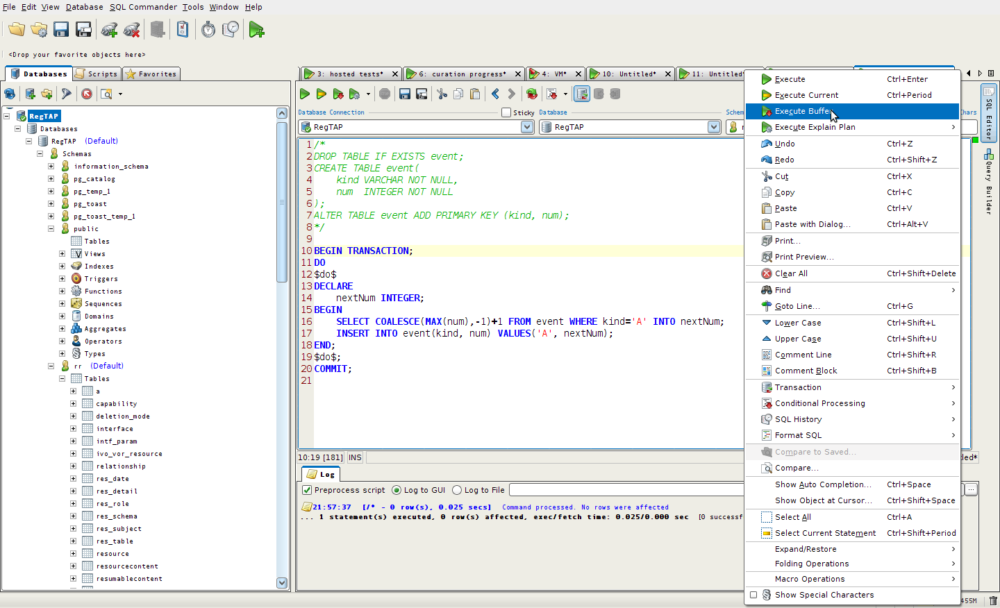

Use the following commands to start/stop or get the status of a locally running PostgreSQL cluster (database server):
systemctl start postgresql.service systemctl stop postgresql.service systemctl status postgresql.service
To find the hostname and port all I had to do, in my local installation at least, was connect as user postgres:
psql postgres— and then run the \conninfo command:

I used the procedure outlined below to move the data directory of my PostgreSQL 12 installation (on my ThinkStation P320 machine running Ubuntu 20.04) to a second, much larger, disk as I needed to import a huge (~100GB) binary dump of some PostgreSQL database that wasn't going to fit in the current location of the data directory. The below procedure of course only relates the data directory migration part, not the importation part (which I fear will be a separate ordeal). In the procedure detailed below, I basically followed the instructions I found here (archived locally here ). The instructions were almost entiery accurate with three notable exceptions:
- the instructions assume that the config file is located inside the data directory. This was not true in my case. I believe that PostgreSQL 12 keeps the data directory and the location of the configuration files different in the default installation so perhaps the instructions I found were written with a different version of PostgreSQL in mind.
- It was not at all necessary to edit the file at: /lib/systemd/system/postgresql.service
- The SELinux part was not at all applicable (I don't even know what that is)
The steps I followed were:
- Take note of the config file and the data directory
locations. Do this by connecting to PostgreSQL with the postgres user doing
pgsql postgres
and then execute the following commands:
 - stop the PostgreSQL server (cluster in PostgreSQL terminology)
systemctl stop postgresql
- prepare the destination directory. In my case I executed
the following commands:
mkdir /media/hddb/postgresql-12-data sudo chown postgres:postgres /media/hddb/postgresql-12-data sudo chmod 700 /media/hddb/postgresql-12-data/ rsync -av /var/lib/postgresql/12/main/ /media/hddb/postgresql-12-data/
- copy over the existing data directory to its new location:
rsync -av /var/lib/postgresql/12/main/ /media/hddb/postgresql-12-data/
- Change the data_directory parameter value in the
postgresql.conf configuration file. The parameter
was previously commented out (and so default value was used); I
obviously set it to the new location:
$ cat /etc/postgresql/12/main/postgresql.conf | grep -i data_directory | grep -v ^# data_directory = '/media/hddb/postgresql-12-data'
NB: the single quotes were actually entered in the config file — I am not 100% certain they were essential.
NB2: in constrast to the instructions I was following, as already mentioned above, in my case the configuration directory was in an entirely different subtree (/etc/postgresql/12/main/postgresql.conf) than the data directory (/var/lib/postgresql/12/main). So, in contrast to the instructions I was using as a guide, I changed the postgresql.conf file in the existing configuration location, and not in the new one (in the instructions the case was that the configuration file was located inside the data directory so of course, in the case, you'd have wanted to edit the configuration file in the new location). - the step in the instructions under the header systemcd configuration was entirely skipped as explained in the introcution
-
I then restarted the PostgreSQL cluster (database server) using:
systemctl daemon-reload systemctl start postgresql.service systemctl status postgresql.service
NB: the first command (systemctl daemon-reload) needs to be executed every time the configuration file changes so it's essential (merely stopping and restarting the cluster won't cut it). - the step in the instructions under the header SELinux was also skipped as explained in the introduction
- to confirm that everything was ok I entirely removed the old data directory and
connected to PostgreSQL to verify that the new locations are now recognized:

I tried to connect over DBeaver with an existing user and password and got:
FATAL: no pg_hba.conf entry for host "127.0.0.1", user "mperdikeas", database "test", SSL on
After investigation and reading this SO answer I got it to work after adding the following line on my /etc/postgresql/12/main/pg_hba.conf file:
host all mperdikeas 127.0.0.1/32 md5
NB: It is important to use the /32 notation. Simply writing 127.0.0.1 fails with the hardly elucidating message: Connection refused (Connection refused)
No changes were necessary in the sibling file /etc/postgresql/12/main/postgresql.conf IIRC
Following the above one, obviously, has to restart PostgreSQL:
service postgresql restart
I created a number of directories using:
mkdir ~/postgresql-tblspaces && cd ~/postgresql-tblspaces mkdir userspay2019 && chown -R postgres:postgres *… while at the same time creating the tablespaces from inside psql:
psql -U postgres CREATE TABLESPACE userspay2019 LOCATION '/home/mperdikeas/postgresql-tblspaces/userspay2019';
postgres=# show data_directory;
data_directory
-----------------------------
/var/lib/postgresql/12/main
(1 row)
postgres=# show config_file;
config_file
-----------------------------------------
/etc/postgresql/12/main/postgresql.conf
(1 row)
- purge previous version
- install PostgreSQL Optionally with the PostGIS extension:
- change password for PostgreSQL user postgres
- create user and database
- make copies of the basic configuration files
- change authentication mode from peer to md5
- create file ~/.pgpass
- configure PostgreSQL to listen to remote connections
- other configurations in postgresql.conf
$ sudo apt remove --purge postgresql $ sudo apt remove --purge postgresql-12*
$ sudo apt install postgis postgresql-12-postgis-3 $ sudo apt install postgresql-12
At this point you want to take advantage of the initial, default peer authentication mode to change the PostgreSQL password for the PostgreSQL user postgres. This will come into play later when you change the authentication mode for the postgres user (and any other user for that matter) from peer to md5:
$ sudo -i -u postgres psql postgres psql (12.9 (Ubuntu 12.9-2.pgdg20.04+1)) Type "help" for help. + postgres=# \password postgres Enter new password: Enter it again:
Note that (according to my understanding) the above only affects the PostgreSQL user postgres, not the Unix user postgres. The latter in fact exists as can be verified by:
$ cat /etc/passwd | grep -i postgres | wc -l 1… but the account is "locked" (and you want to keep it locked as advised in this SO answer. The locked status can be verified by (source):
$ sudo passwd --status postgres postgres L 05/26/2021 0 99999 7 -1
In general, you don't want to do anything with the UNIX user postgres and you
DEFINITELY don't want to set a password for that user (as that would unlock the account) by doing a:
DANGER: do not do the below:
$ sudo passwd postgresYou can read more in this SO answer.
In the same vein you might also want to create an actual user (not postgres) while the peer authentication mode is still applicable:
$ sudo -i -u postgres createuser --interactive johndoe $ sudo -i -u postgres psql psql (12.9 (Ubuntu 12.9-2.pgdg20.04+1)) Type "help" for help. postgres=# ALTER USER johndoe WITH PASSWORD 'super.secret'; ALTER ROLE
$ sudo -u postgres psql -c 'create database acmeindustries'; CREATE DATABASE
$ cp /etc/postgresql/12/main/pg_hba.conf /etc/postgresql/12/main/pg_hba.conf.ORIGINAL $ cp /etc/postgresql/12/main/postgresql.conf /etc/postgresql/12/main/postgresql.conf.ORIGINAL
In file pg_hba.conf change the following line:
local all postgres peerto:
local all postgres md5
In the same file, I have also done the following changes but I don't know how essential they are: Change the following line:
host all all 127.0.0.1/32 md5to:
host all all 192.168.2.0/8 md5… and also comment out the replication lines at the end of the file (since I don't believe I am using this feature)
Now is a good time to create file ~/.pgpass to make connecting to the database easier. Typical contents:
$ cat ~/.pgpass localhost:5432:postgres:postgres:super.secret localhost:5432:acmeindustries:johndoe:duper.secret
You might also want to create the ~/.psqlrc file but this is less useful (and might even be confusing at times if you are not aware of its existence):
$ cat ~/.psqlrc \set ON_ERROR_STOP on
To do that you have to edit the postgresql.conf file and change the listen_addresses setting. Typical value to instruct your machine (assuming your IP is 192.168.2.2) to listen to the external NIC and not just to the local loopback:
listen_addresses = 'localhost, 192.168.2.2'
At this point, you might also want to change the port setting to a value other than the default of 5432. This might be necessary if another PostgreSQL cluster (e.g. some previous version, say PostgreSQL 9) is also running on the same machine.
I also have found it necessary at times, e.g. when using migration tools to increase the value of max_locks_per_transaction to 1024.
Tried that on PostgreSQL 12.9:
so answer
Text dump:
pg_dump -U mperdikeas -h 192.168.2.9 -p 5432 -Fp dbname > /path/to/dump.txt
Binary dump:
pg_dump -U mperdikeas -h 192.168.2.9 -p 5432 -Fc dbname > /path/to/dump.bin
NB: the database dbname needs to exist before running the command given below:
pg_restore -d dbname -U mperdikeas -h localhost /path/to/file.dump
- find current database
SELECT current_database();
- describe table
\d+ tablename
- list tables and databases, change databases etc
- See this
I followed the instructions from here
sudo apt update sudo apt install postgis postgresql-12-postgis-3
… subsequently, I connected to the database I wanted to create the extension in with, e.g.:
psql -U mperdikeas -d acme_industries
… and then created the extension there with:
CREATE EXTENSION postgis;
So, apparently, the PostGIS extension is not installed on the PostgreSQL cluster as a whole, but on each particular database. This means that the extension has to be re-created whenever the database is dropped. Finally, I verified that the extension is now available with:
SELECT PostGIS_version();
I followed the instructions from here and asked, specifically, for PostgreSQL 12 to be installed on the last step:
sudo sh -c 'echo "deb http://apt.postgresql.org/pub/repos/apt $(lsb_release -cs)-pgdg main" > /etc/apt/sources.list.d/pgdg.list' wget --quiet -O - https://www.postgresql.org/media/keys/ACCC4CF8.asc | sudo apt-key add - sudo apt-get update sudo apt-get -y install postgresql-12
I then verified that PostgreSQL was running by doing a:
/etc/init.d/postgresql status
Since the above does not report the version of PostgreSQL, I confirmed that it is PostgreSQL 12 that is running by doing a:
pgrep -u postgres -fa -- -D
Subsequently, to connect to PostgreSQL, I had to edit the file /etc/postgresql/12/main/pg_hba.conf. This controls the client authentication mechanisms and allows client-side tools (which use Unix Domain sockets) to connect to the database server. To that end, I was guided, more or less by this previous note
Namely, since I had forgotten, or wasn't able to use, the default PostgreSQL password I initially changed the local authentication mode to 'trust'. I.e. I changed the line:
local all postgres peerto:
local all all trustor (I am not really sure, but I dont think it makes much difference) to:
local all postgres trustNB: after each modification of the pg_hba.conf or postgresql.conf files you have to do a:
/etc/init.d/postgresql restart… for the changes to take effect. This allowed me to change the postgres user password to:
ALTER USER postgres PASSWORD 'supersecret';(mind the ; at the end — it is important) Following that, I changed the authentication method for both local (i.e. Unix Domain sockets) and host (i.e. TCP/IP sockets) to md5:
local all all md5 host all all 192.168.2.0/8 md5The 192.168.2.0/8 means that the server is accepting connections from all IPv4 address in the local 192.168.2.0/8 subnet. There are much more permissive wildcards one can use, including any IP address on the Internet.
However, following the above, I was still unable to connect to PostgreSQL from another machine (even though I had set host authentication to md5. Moreover, when trying to connect from other machines I was getting connection refused (or something).
To fix that I had to instruct PostgreSQL to listen on the network card interface as well and not just on the localhost loop (which is the initial configuration for obvious security reasons). To do that I edited file /etc/postgresql/12/main/postgresql.conf and change the line
#listen_addresses = 'localhost'to:
listen_addresses = 'localhost, 192.168.2.7'After that I was able to connect remotely as well.
initial files:
pg_hba.conf
postgresql.conf
modified files:
pg_hba.conf
postgresql.conf
PostgreSQL allows one to authenticate using two mechanisms:
- the so called IDENT/PEER authentication which uses UNIX accounts
- the TCP authentication which uses PostgreSQL's own managed username / passwords
sudo passwd --lock postgres… and subsequently verified that the postgres UNIX account is indeed locked by doing:
$ sudo cat /etc/shadow | grep -i postgres postgres:!*:17117:0:99999:7::: $ sudo passwd -S postgres postgres L 11/12/2016 0 99999 7 -1You may read more here.
update 2021-12-15 An easier way to check for the locked status of an account is offered here.
I then changed the password of the TCP user postgres by doing:
$ sudo -i -u postgres psql postgres psql (9.5.19) Type "help" for help. postgres=# \password postgres Enter new password: Enter it again:
Finally, I created a new TCP user mperdikeas and set his password:
$ sudo -i -u postgres createuser --interactive mperdikeas Shall the new role be a superuser? (y/n) n Shall the new role be allowed to create databases? (y/n) y Shall the new role be allowed to create more new roles? (y/n) n $ sudo -i -u postgres psql psql (9.5.19) Type "help" for help. postgres=# ALTER USER mperdikeas WITH PASSWORD '<redacted>'; ALTER ROLE postgres=# \q
You will notice that for all administrative commands we are using the UNIX user postgres
NB: be sure to set the authentication method to 'md5' in the following file:
/etc/postgresql/9.5/main/pg_hba.conf(allowed values are trust, peer and md5)
Today I implemented the following SSCCE to dig recursive WITH queries:
Let's first define a simple schema to represent trees so we can motivate
a use case of recursive queries.
We can imagine having two tables to represent two kinds of nodes:
- "proper" nodes
- leaf nodes, which can hang under any "proper" node (including internal ones)
A possible approach would be the following:
DROP TABLE IF EXISTS leaf;
DROP TABLE IF EXISTS node;
CREATE TABLE node (
i INTEGER NOT NULL,
parent INTEGER NULL
);
ALTER TABLE node ADD PRIMARY KEY(i);
CREATE TABLE leaf (
i SERIAL,
leafName VARCHAR NOT NULL,
underNode INTEGER NOT NULL);
ALTER TABLE leaf ADD PRIMARY KEY (i);
ALTER TABLE leaf ADD FOREIGN KEY (underNode) REFERENCES node(i);
One can imagine the above schema to be populated with the below test data:
INSERT INTO node VALUES
(1, NULL), (2, NULL), (3, 1), (5, 1), (7, 1), (4, 2), (6, 2);
INSERT INTO leaf(leafName, underNode) VALUES
('leaf under 1', 1), ('leaf under 2', 2), ('leaf under 3', 3), ('leaf under 5', 5), ('leaf under 7', 7);
Given the above, the following query fetches the names of all leaves hanging under the 'subtree' of node with key #1:
WITH RECURSIVE NODES_IN_SUBTREE (i) AS (
VALUES (1)
UNION ALL SELECT a.i FROM NODES_IN_SUBTREE INNER JOIN node a
ON a.parent = NODES_IN_SUBTREE.i
)
SELECT leafName FROM leaf
WHERE underNode IN (SELECT i FROM NODES_IN_SUBTREE);
… and the following query fetches all leaves that live under the 'subtrees' of all nodes who are children of the root of the tree (therefore, effectively fetches all leaves in the tree):
WITH RECURSIVE NODES_IN_SUBTREE (i) AS (
(SELECT i FROM node WHERE parent IS NULL)
UNION ALL SELECT a.i FROM NODES_IN_SUBTREE INNER JOIN node a
ON a.parent = NODES_IN_SUBTREE.i
)
SELECT leafName FROM leaf
WHERE underNode IN (SELECT i FROM NODES_IN_SUBTREE);
On 2016-04-20 I faced the following situation: a colleague built and configured a PostgreSQL 9.4 cluster on my home directory and apparently no superuser 'postgres' was created. The steps the colleague executed were the bold ones from the following:
- ./configure
- make
- su
- make install
- adduser postgres
- mkdir /usr/local/pgsql/data
- chown postgres /usr/local/pgsql/data
- su - postgres
- /usr/local/pgsql/bin/initdb -D /usr/local/pgsql/data
- /usr/local/pgsql/bin/postgres -D /usr/local/pgsql/data >logfile 2>&1 &
- /usr/local/pgsql/bin/createdb test
- /usr/local/pgsql/bin/psql test
Except for the fact that the path was not /usr/local/pgsql, but rather ~/postgresql-9.4.5.
Also, the command at item #10 is just to start the database cluster server. Instead I could start the server myself with the following:
./postgres-9.4.5/bin/postgres -D ./postgres-9.4.5/data/The main problem that there was no superuser which I could use to connect to the PostgreSQL cluster (using psql) and from there on to create my own project-specific database and user.
To that end, I created a user postgres as follows:
createuser --interactive postgres
... and proceed to answer "yes" to the question whether the user ought to be a superuser.
# "local" is for Unix domain socket connections only local all all trust # IPv4 local connections: host all all 127.0.0.1/32 md5 # IPv6 local connections: host all all ::1/128 md5
... and then connected as user postgres and changed its password to:
$ which psql ~/postgres9/bin/psql rawdar@radacerd:~# $ psql -U postgres psql (9.4.5) Type "help" for help. postgres=# alter user postgres password 'secret';
... even though that was not strictly necessary as I was only connecting as user postgres using psql which uses Unix domain sockets and thus falls under the trust model.
Following the above I was able to run my subsequent (domain-specific) scripts that created the project user and its database (and which rely on psql access with the superuser postgres).
What I understood from the above is that when PostgreSQL 9.4 is created in the home directory of an arbitrary user there's nothing special about the postgres user, any superuser who can create additional roles and databases will do.
Note in the above connection that postgres is a user of the PostgreSQL cluster (or, more correctly, a role) and not a Unix/Linux system user.
#tcp_keepalives_idle = 0 # TCP_KEEPIDLE, in seconds;
# 0 selects the system default
tcp_keepalives_idle = 200 # TCP_KEEPIDLE, in seconds;
#tcp_keepalives_interval = 0 # TCP_KEEPINTVL, in seconds;
# 0 selects the system default
tcp_keepalives_interval = 30 # TCP_KEEPINTVL, in seconds;
#tcp_keepalives_count = 0 # TCP_KEEPCNT;
# 0 selects the system default
tcp_keepalives_count = 10 # TCP_KEEPCNT;
...in this file: /postgresDB/data-9.1.14/postgresql.conf at
the new EuroVO registry PostgreSQL cluster.
Sources:
SO, GNU Gatekeeper keepalive page
select pg_terminate_backend(procpid)
from pg_stat_activity
where usename = 'yourusername'
and current_query = '<IDLE>'
and query_start < current_timestamp - interval '5 minutes'
;
source
- Using the pg_stat_activity table This method requires no installation (but I've never managed to extract much useful information from it):
SELECT * FROM pg_stat_activity
SELECT * FROM pg_stat_statements ORDER BY total_time DESC
- postgresql.conf
-
- PostgreSQL 9.3 in Ubuntu 14.04 (NP desktop) Residing in: /etc/postgresql/9.3/main/postgresql.conf
NB: not to be confused with the postgresql.conf.sample file residing in:
/usr/share/postgresql
... of which I had made a copy named postgresql.conf that led to the confusion reported in this StackOverflow post. - pg_hba.conf
-
- PostgreSQL 9.3 in Ubuntu 14.04 (NP desktop) Residing in: /etc/postgresql/9.3/main/pg_hba.conf
sudo apt-get install python-pip
sudo apt-get install python-dev libpq-dev libevent-dev
sudo pip install pgcli
SELECT DISTINCT CAST (XPATH('@status',XMLPARSE(CONTENT "content")) AS VARCHAR), isdeleted
FROM vo_business.hosted_record_version
The following solution worked for me:
sudo chown postgres /etc/ssl/private/ssl-cert-snakeoil.key
sudo chown postgres /etc/ssl/certs/ssl-cert-snakeoil.pem
So far, the repository support:
- Debian 6.0 (squeeze), 7.0 (wheezy), and unstable (sid) 64/32 bit (amd64/i386)
- Ubuntu 10.04 (lucid), 12.04 (precise), and 14.04 (trusty) 64/32 bit (amd64/i386)
- PostgreSQL 8.4, 9.0, 9.1, 9.2, 9.3
- Server extensions such as Slony-I, various PL languages, and datatypes
- Applications like pgadmin3, pgbouncer, and pgpool-II
- Create and edit the PostgreSQL repository by running the command below:
- Download & import the repository key:
- Update your system:
- Now you're able to install PostgreSQL via below command:
sudo emacs -nw /etc/apt/sources.list.d/pgdg.list
Insert the following line:
deb http://apt.postgresql.org/pub/repos/apt/ trusty-pgdg main
wget --quiet -O - https://www.postgresql.org/media/keys/ACCC4CF8.asc | sudo apt-key add -
sudo apt-get update && sudo apt-get upgrade
sudo apt-get install postgresql-9.3 pgadmin3
source
 .
Start by examining user sessions:
SELECT * FROM pg_stat_activity;Cancel the backend process (gentle):
SELECT pg_cancel_backend(… if the above doesn't work (it didn't in my case), try the more forceful:);
SELECT pg_terminate_backend(source);
sudo cat /etc/postgresql/9.1/main/postgresql.conf | grep log_directory
SELECT
DISTINCT ivoid, CAST(xpath('//*[local-name()=''capability'' and @xsi:type=''ssa:SimpleSpectralAccess'']/*[local-name()=''testQuery'']' , content, ARRAY[ARRAY['xsi', 'http://www.w3.org/2001/XMLSchema-instance']]) AS VARCHAR)
FROM rr.resourcecontent
WHERE CAST(xpath('//*[local-name()=''capability'' and @xsi:type=''ssa:SimpleSpectralAccess'']/*[local-name()=''testQuery'']' , content, ARRAY[ARRAY['xsi', 'http://www.w3.org/2001/XMLSchema-instance']]) AS VARCHAR)!='{}'
SELECT
CAST(xpath('//*[local-name()=''capability'' and (@standardID=''ivo://ivoa.net/std/SIA'' or @standardID=''ivo://ivoa.net/std/SSA'')]/@standardID' , content) AS VARCHAR), count(*)
FROM someschema.sometable
GROUP BY CAST(xpath('//*[local-name()=''capability'' and (@standardID=''ivo://ivoa.net/std/SIA'' or @standardID=''ivo://ivoa.net/std/SSA'')]/@standardID' , content) AS VARCHAR)
Example:
psql -d RegTAP -t -A -F"," -c "SELECT pregraft FROM vo_business.harvest_record WHERE recordivoid='ivo://irsa.ipac/Spitzer/Images/SINGS'" > pregraft
Example (including also a cast):
SELECT ivoidlowercase, xpath('@xsi:type', content, ARRAY[ARRAY['xsi', 'http://www.w3.org/2001/XMLSchema-instance']])
FROM rr.resourcecontent
WHERE lower(CAST (xpath('@xsi:type', content, ARRAY[ARRAY['xsi', 'http://www.w3.org/2001/XMLSchema-instance']]) AS VARCHAR)) LIKE '%vs:dataservice%'
- trust all local UNIX-domain sockets (that tools like psql are using to create database and user in the various scripts)
- configure password-based authentication (md5) for TCP/IP sockets
E.g. (as found in my SAT machine)
$ sudo cat /etc/postgresql/9.1/main/pg_hba.conf | grep -v ^# | uniq
local all postgres trust
local all all trust
host all all 127.0.0.1/32 md5
host all all ::1/128 md5
A cluster in Postgres is simply a Postgres installation. Cluster here is not meant in the hardware sense of multiple computers working together. In Postgres, cluster refers to the fact that you can multiple unrelated databases all up and running using the same Postgres server engine. So, in other words, a cluster is a database server.
So in both Postgres and the SQL Standard we have this containment hierarchy:
- A computer may have one or multiple clusters.
- A database server is a cluster.
- A cluster has catalogs. ( Catalog = Database )
- Catalogs have schemas. (Schema = namespace of tables, and security boundary)
- Schemas have tables.
- Tables have rows.
- Rows have values, defined by columns.

- The PARTITION clause defines the window, however some functions by default operate on a concept called the 'frame' which may by, default include less than the full window
E.g. see what postgreSQL says:
Note that first_value, last_value, and nth_value consider only the rows within the "window frame", which by default contains the rows from the start of the partition through the last peer of the current row. This is likely to give unhelpful results for last_value and sometimes also nth_value. You can redefine the frame by adding a suitable frame specification (RANGE or ROWS) to the OVER clause. See Section 4.2.8 for more information about frame specifications.
- In the same vein:
- over (order by x) is really shortcut for:
- over (order by x rows between unbounded preceding and current row) ... and so, sometimes (see example below), the below form is needed:
- over (order by x rows between unbounded preceding and unbounded following
- helpful site and other links:
Some instructive examples follow:
-- order by x means "order by x rows between unbounded preceding and current row
select x, array_agg(x) over (rows between unbounded preceding and current row) from generate_series(1, 10) AS t(x)
select x, array_agg(x) over (order by x rows between unbounded preceding and current row) from generate_series(1, 10) AS t(x)
select x, array_agg(x) over (order by x) from generate_series(1, 10) AS t(x)
select foo.*, first_value(i) over (partition by a order by i desc) from foo
select foo.*, lag(i) over (partition by a order by i asc) from foo
select foo.*, lag(i, 2) over (partition by a order by i asc) from foo
select foo.*, lag(i, 2, -1) over (partition by a order by i asc) from foo
select x, array_agg(x) over (rows between current row and unbounded following) from generate_series(1, 10) AS t(x)
select x, array_agg(x) over () from generate_series(1, 10) AS t(x)
select x, array_agg(x) over (order by x) from generate_series(1, 10) AS t(x)
CREATE TABLE employee_salary(employee VARCHAR, department VARCHAR, salary INTEGER);
INSERT INTO employee_salary
VALUES
('mike', 'sales', 90000),
('john', 'sales', 130000),
('paul', 'sales', 70000),
('anna', 'dev' , 20000),
('peter','dev' , 50000)
SELECT employee, salary, department,
round(AVG(salary) OVER (PARTITION BY department),0) AS average_dept_salary,
rank() OVER (PARTITION BY department ORDER BY salary DESC) AS salary_rank,
lead(salary) OVER (PARTITION BY department ORDER BY salary ASC) AS next_higher,
lag (salary) OVER (PARTITION BY department ORDER BY salary ASC) AS prev_lower,
first_value(salary) OVER (PARTITION BY department ORDER BY salary ASC ROWS BETWEEN UNBOUNDED PRECEDING AND UNBOUNDED FOLLOWING) AS lowest_salary_in_department,
last_value (salary) OVER (PARTITION BY department ORDER BY salary ASC ROWS BETWEEN UNBOUNDED PRECEDING AND UNBOUNDED FOLLOWING) AS highest_salary_in_department
FROM employee_salary
- downloaded pgSphere sources from the pgSphere homepage
- I opted for the second way to compile pgSphere (as instructed in the installation instructions page), which is the one that does not require the PostgreSQL sources but, instead, the configuration tool pg_config
- since pg_config didn't exist I installed it by executing:
sudo apt-cache search postgresql-server-dev sudo apt-get install postgresql-server-dev-9.1Now, pg_config is installed and its location can be got with:which pg_config
(we use that location below) - expand the pgSphere tarball we downloaded and cd into the directory that's created:
tar xvfz pgsphere-1.1.1.tar.gz cd pgsphere-1.1.1/ - follow the installation instructions linked above ("second way"), replacing "/path/to/pg_config" with the actual path
- when I tried to check the installation as instructed:
To check the installation change into the pg_sphere source directory again and run:
shell> make installcheck
... I got the following error trace:Makefile:29: ../../src/Makefile.global: No such file or directory Makefile:30: /contrib/contrib-global.mk: No such file or directory make: *** No rule to make target `/contrib/contrib-global.mk'. Stop.... but the installation was successful nonetheless because I was able to execute the last step as advised in "2.3. Creating a database with pgSphere" of the installation instructions linked above with:psql -U postgres -d RegTAP -f ./pg_sphere.sql
wget http://pgfoundry.org/frs/download.php/2558/pgsphere-1.1.1.tar.gz
make USE_PGXS=1 PG_CONFIG=/usr/bin/pg_config
sudo make USE_PGXS=1 PG_CONFIG=/usr/bin/pg_config install
SELECT emp_name, salary, RANK() OVER (ORDER BY salary DESC) AS sal_pos
FROM test_curation.employee
ORDER BY sal_pos ASC
(contrast the results, with those one gets when using ROW_NUMBER() instead of RANK)
This can allow us to obtain the three highest paid employees, where using the simpler LIMIT
clause of PostgreSQL would fail because of the tie on the third rank (Elizabeth and Flora).
The below simple approach shows only one of the two employees with a salary of 4:
SELECT emp_name, salary
FROM test_curation.employee
ORDER BY salary DESC
LIMIT 3
... whereas using the window function RANK() one is able to get both of them:
SELECT x.* FROM (
SELECT emp_name, salary, rank() OVER (ORDER BY salary DESC) AS sal_pos
FROM test_curation.employee
ORDER BY sal_pos ASC) x
WHERE x.sal_pos<=3
There is also the DENSE_RANK() function which continues counting, in case of ties, from the exactly previous rank (whereas RANK() in case of ties leaves a gap as wide as the number of tied elements).
DROP TABLE IF EXISTS test_curation.employee;
CREATE TABLE test_curation.employee (
department VARCHAR,
emp_name VARCHAR,
salary INTEGER);
INSERT INTO test_curation.employee(department, emp_name, salary) VALUES ('SALES', 'MIKE', 3);
INSERT INTO test_curation.employee(department, emp_name, salary) VALUES ('SALES', 'MARJORIE', 5);
INSERT INTO test_curation.employee(department, emp_name, salary) VALUES ('SALES', 'ELIZABETH', 4);
INSERT INTO test_curation.employee(department, emp_name, salary) VALUES ('SALES', 'FLORA', 4);
INSERT INTO test_curation.employee(department, emp_name, salary) VALUES ('DEV', 'THOMAS', 10);
INSERT INTO test_curation.employee(department, emp_name, salary) VALUES ('DEV', 'GEORGE', 2);
INSERT INTO test_curation.employee(department, emp_name, salary) VALUES ('DEV', 'MENELAUS', 1);
-- simple example to demonstrate the use of the window function AVG
SELECT department, emp_name, AVG(salary) OVER (PARTITION BY department), rank() OVER (PARTITION BY department ORDER BY salary DESC)
FROM test_curation.employee;
-- using the window function rank, observe that both Elizabeth and Flora appear as rank() assigns the same number
-- in case of ties
SELECT department, emp_name, salary, avg FROM
(SELECT department, emp_name, salary, AVG(salary) OVER (PARTITION BY department), rank() OVER (PARTITION BY department ORDER BY salary DESC)
FROM test_curation.employee) r
WHERE rank<=2;
-- rank() assigns the same number in case of ties() and also leaves gaps right after a tie:
SELECT department, emp_name, salary, avg FROM
(SELECT department, emp_name, salary, AVG(salary) OVER (PARTITION BY department), rank() OVER (PARTITION BY department ORDER BY salary DESC)
FROM test_curation.employee) r
WHERE rank=3;
-- row_number() always assigns different numbers and in case of a tie one row is chosen based on some arbitrary criterion (e.g. actual order fetched maybe?)
SELECT department, emp_name, salary, avg FROM
(SELECT department, emp_name, salary, AVG(salary) OVER (PARTITION BY department), row_number() OVER (PARTITION BY department ORDER BY salary DESC)
FROM test_curation.employee) r
WHERE row_number<=2;
Given the below table:
CREATE TABLE A (A1 INTEGER, A2 INTEGER, A3 INTEGER);
INSERT INTO A(A1, A2, A3) VALUES (1, 1, 1);
INSERT INTO A(A1, A2, A3) VALUES (2, 1, 1);
INSERT INTO A(A1, A2, A3) VALUES (2, 1, 2);
INSERT INTO A(A1, A2, A3) VALUES (3, 1, 2);
INSERT INTO A(A1, A2, A3) VALUES (2, 1, 2);
INSERT INTO A(A1, A2, A3) VALUES (4, 1, 2);
INSERT INTO A(A1, A2, A3) VALUES (4, 1, 5);
INSERT INTO A(A1, A2, A3) VALUES (3, 1, 5);
The following obtains minimum a1 values for every combination of a2 and a3:
SELECT DISTINCT ON (a2, a3) a2, a3, a1 FROM A ORDER BY a2, a3, a1
Whereas the following does the same, for maximum a1 values:
SELECT DISTINCT ON (a2, a3) a2, a3, a1 FROM A ORDER BY a2, a3, a1 DESC
- command line only:
- more refined, once connected as postgres superuser:
- the way above from the command line:
dropdb <database name>
DROP DATABASE IF EXISTS <database name>
psql -U postgres postgres -f <file with the above script>
SELECT ( CAST (xpath('/*/@xsi:type', content, array[array['xsi', 'http://www.w3.org/2001/XMLSchema-instance']]) AS TEXT[]))[1] from rr.resourcecontent
More complicated case (2 namespace prefixes):
SELECT ( CAST (xpath('/ri:Resource/@xsi:type', content, array[array['xsi', 'http://www.w3.org/2001/XMLSchema-instance'],
array['ri', 'http://www.ivoa.net/xml/RegistryInterface/v1.0']]) AS TEXT[]))[1] from rr.resourcecontent
SELECT ( CAST (xpath('/*/identifier', content) AS TEXT[]))[1] from rr.resourcecontent
select 'a' = ANY ('{a , b}'::varchar[])
select count(*) from rr.resourcecontent where cast (xpath('/*/capability/@standardID', content) as text[])='{ivo://ivoa.net/std/ConeSearch}'
- or - (to allow use of PostgreSQL trim function - but only if only one item is returned):
select count(*) from rr.resourcecontent where trim( cast (xpath('/*/capability/@standardID', content) as text))='{ivo://ivoa.net/std/ConeSearch}'
- or - (if an array of values may be returned by the XPath expression):
select count(*) from rr.resourcecontent where 'ivo://ivoa.net/std/ConeSearch' = ANY (cast (xpath('/*/capability/@standardID', content) as text[]) )
(I haven't found a way how to cast to a text array and do a trim() at the same time).
- VSI - very silly inserts (executing queries made by concatenated Strings, one-by-one)
- SPI - stupid prepared inserts (executing queries made by Prepared Inserts one-by-one)
- BPI - batch prepared inserts (executing queries made by Prepared Inserts in batches)
- CPI - copy inserts (using the 'properietary' COPY FROM API offered by PostgreSQL driver)
 My take is that BPIs are good enough without having to venture out onto non-standard CPI-land.
My take is that BPIs are good enough without having to venture out onto non-standard CPI-land.
Caveat: according to this SO discussion auto commit should be set to false for BPI to offer any advantage over SPI (setting auto commit to false is one JDBC's best practices anyway).
/usr/lib/postgresql/9.2/bin/pg_ctl
You have to change certain values in file postgres.conf and restart the server.
File postgres.conf is located in: /etc/postgresql/9.1/main/postgresql.conf
Diff of the changes I made is shown below:
$ diff /etc/postgresql/9.1/main/postgresql.conf.safe.2012-01-15 /etc/postgresql/9.1/main/postgresql.conf
276c276
< #log_destination = 'stderr'# Valid values are combinations of
---
> log_destination = 'stderr'# Valid values are combinations of
282c282
< #logging_collector = off# Enable capturing of stderr and csvlog
---
> logging_collector = on# Enable capturing of stderr and csvlog
288c288
< #log_directory = 'pg_log'# directory where log files are written,
---
> log_directory = 'pg_log'# directory where log files are written,
290c290
< #log_filename = 'postgresql-%Y-%m-%d_%H%M%S.log'# log file name pattern,
---
> log_filename = 'postgresql-%Y-%m-%d_%H%M%S.log'# log file name pattern,
398c398
< #log_statement = 'none'# none, ddl, mod, all
---
> log_statement = 'all'# none, ddl, mod, all
The log directory (value log_directory) is located relative to the data directory of postgresql which is obtained as follows:
$ grep -i data /etc/postgresql/9.1/main/postgresql.conf
# option or PGDATA environment variable, represented here as ConfigDir.
data_directory = '/var/lib/postgresql/9.1/main'# use data in another directory
Once the server is restarted, the SQL queries (DDL and/or DML depending on the settings) can be obtained with:
sudo -i
tail -f /var/lib/postgresql/9.1/main/pg_log/postgresql-2013-01-15_182646.log
select current_database();
select current_schema();
select current_user;
select extract('epoch' from now());
select extract(epoch from now())::integer
select extract('epoch' from current_timestamp);
select now();
select current_timestamp;
the last two are useful because they reveals the timezone.
pg_dump <database> -h 172.333.444.555 -p 5444 -U username -F p -E UTF8 -C -O -n %ltschema-name> -v -f dumpfile database-name
local all all trust
host all all 192.168.2.2/24 md5
The rationale of local trust being to ensure that I can easily
add scripts to create users without the hassle of entering
passwords which is hard to do non-interactively. Remote accesses in
a specified subnet use md5 authentication ofcourse.
And in file /etc/postgresql/9.1/main/postgresql.conf, to enable remote access:
listen_addresses = '*'
listen_addresses = '*'
sudo-i
cd /etc/postgresql/9.1/main
in pg_hba.conf add the following line:
host all all 172.31.0.0/16 md5
and in file postgresql.conf, change:
listen_addresses='localhost'
to:
listen_addresses='*'
This can be used, e.g. to automate the creation of users by means of a script. Basically the following line has to be edited in the pg_hba.conf file:
local all all trust
For full reproducibility here's the full pg_hba.conf and the
postgresql.conf configuration files.
(the second doesn't play any part in this solution and is just provided for completeness
purposes).
It's a two step process:
- enable client authentication Edit file /etc/postgresql/9.1/main/pg_hba.conf and append the following configuration line to give access to the 192.168.2.0/24 network:
- set the deamon to listen to the network interface Edit file /etc/postgresql/9.1/main/postgresql.conf and add the line:
host all all 192.168.2.0/24 md5
listen_addresses = '*'
... to listen to all the network interfaces.
sudo /etc/init.d/postgresql restart
Connect as an existing user to an existing database and run the "select version()" query, or from the command line:
psql -Uhr -d ab -c 'select version()'
… alternatively, if you don't know the passwords of any existing users but you have sudo privilleges, do:
sudo -u postgres psql postgres -c 'SELECT version()' | grep PostgreSQL